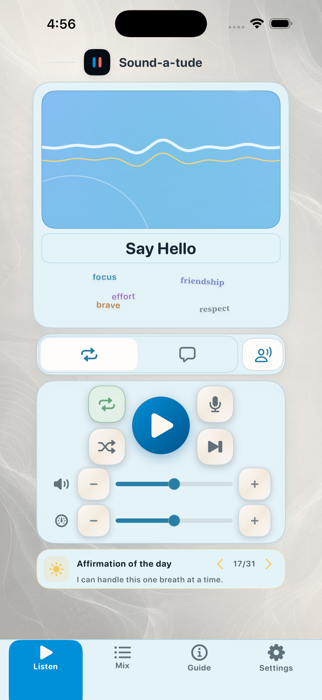
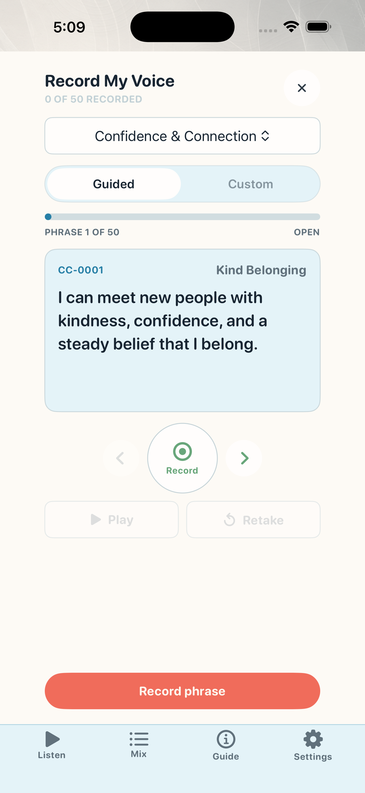
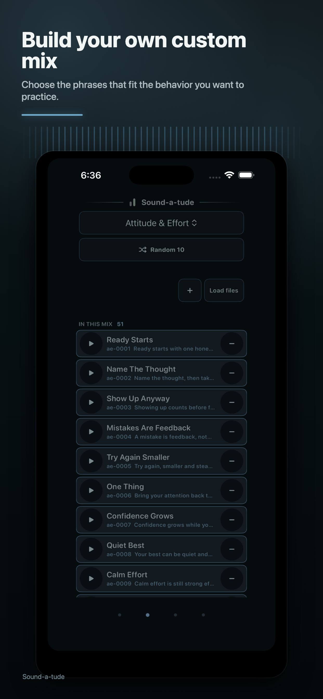
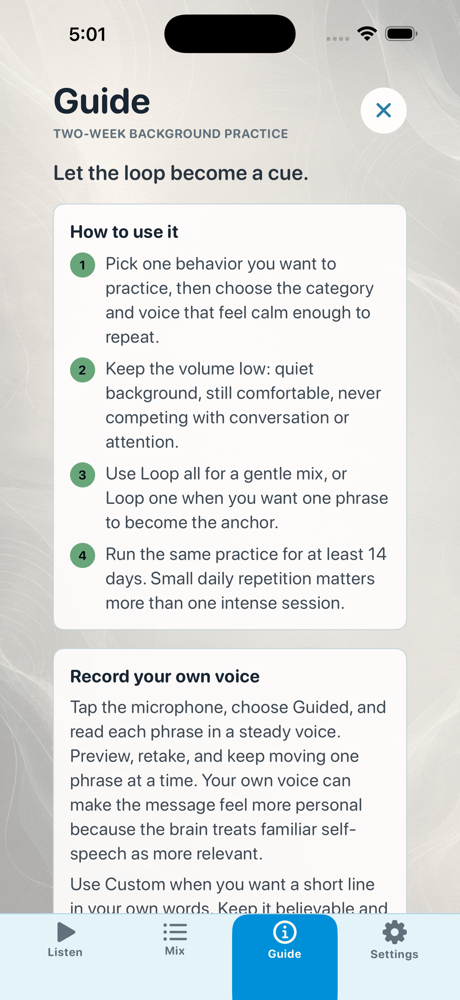

Play soothing loops
Use built-in voices for short phrase practice or longer two-voice conversations.
Free starter. Plus is 3 days free, then $0.99/month.
Train the voice in your head.
Short phrases, soothing voices, conversations, and your own recordings become calm practice loops you can keep in the background.
free starter categories
own-voice recordings per free category
monthly Plus after a 3-day trial
How it works
Pick a phrase set, choose a voice, keep the volume low, and let the loop become familiar. The goal is not hype. It is a steady cue for the next useful rep.

Use built-in voices for short phrase practice or longer two-voice conversations.

Your own voice can make the phrase feel less distant and more personal.

Choose the phrases that fit the behavior you want to practice this week.
Own-voice practice
Built-in voices make it easy to begin. Recording custom phrases in your own voice makes the loop feel specific: your words, your timing, your category, your mix.
Ready starts with one honest rep.
I can pause, reset, and try again.
My next choice can be better than my last one.
Launch offer
The first version is intentionally simple: no account, no social feed, no streak pressure. Just phrases, conversations, recordings, and mixes.
Free
$0Sound-a-tude Plus
$0.99 per month after 3 days free
Two-week rhythm
Get familiar. Notice which phrases feel true enough to repeat.
Pair the loop with one small behavior: start, breathe, focus, greet, try again.
Adjust the mix to the lines that actually helped.
Support
iPhone release is pending App Review. After approval, this page can add the public App Store link.